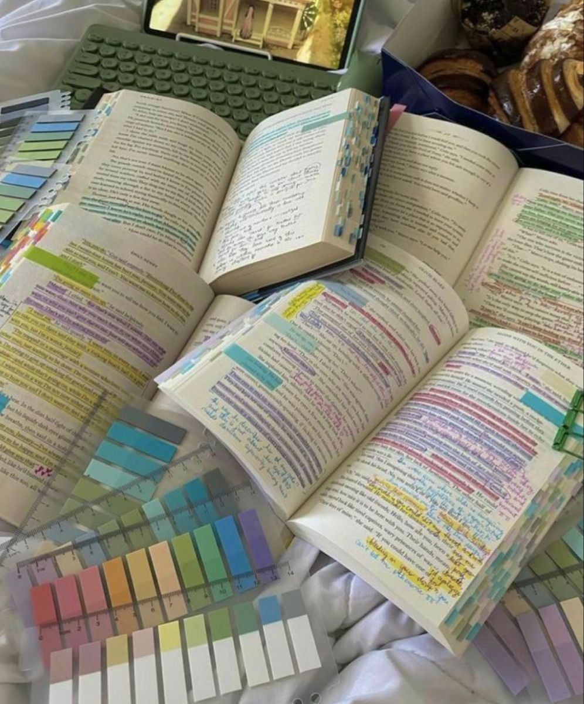
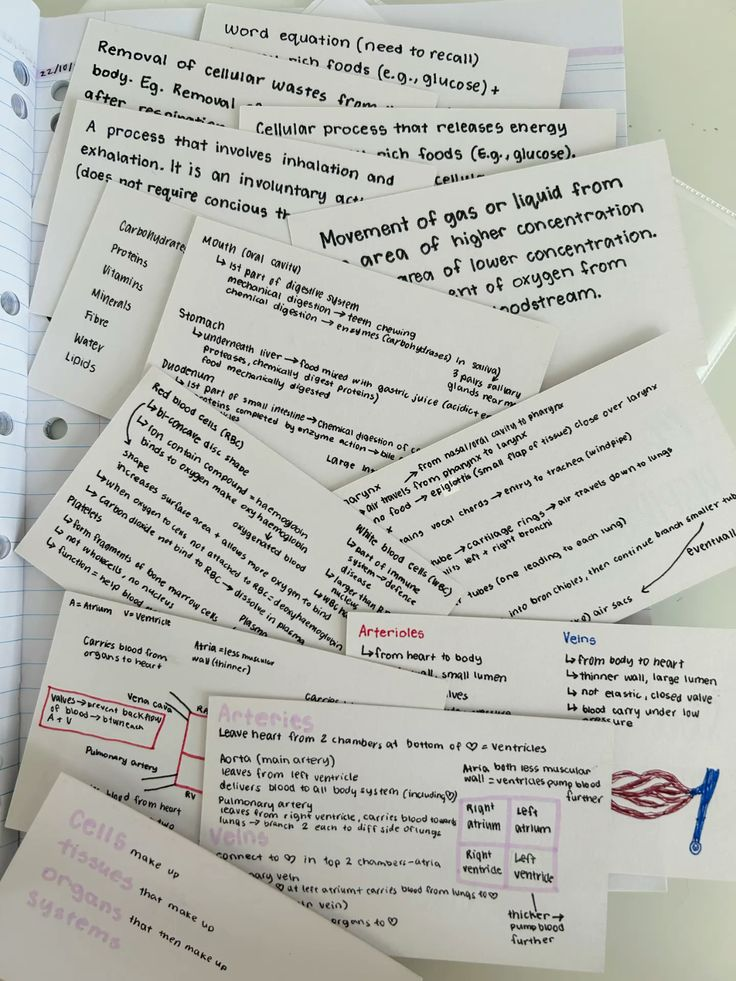
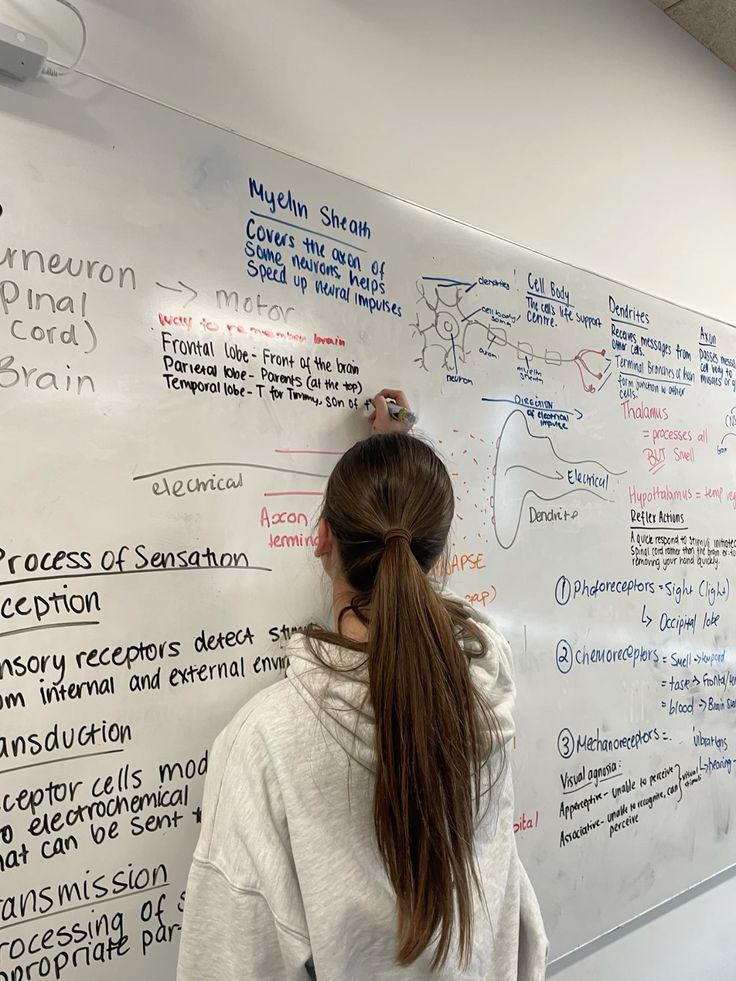

Active Recall : စာကျက်ပြီး စာမရတာမျိုး မဖြစ်စေမယ့် စာလုပ်နည်း
(1) စာလုပ်ပေမယ့်စာမရ ရတဲ့အကြောင်း
စာလုပ်တဲ့နေရာမှာ passive learning နှင့်
Active Learning ဆိုပြီး
နှစ်မျိုးရှိပါတယ်
သူများ စာသင်တာ ကိုနားထောင်တာ
စာအုပ်ကို ဖတ်တာ
Video Tutorial တွေကြည့်တာတွေကို
Passive leaning လို့ခေါ်ပါတယ်
ဒါဟာဘာနဲ့တူသလဲဆိုတော့
ရေကူးနည်းကို
YouTube Video ကြည့်တာနဲ့တူပါတယ်
နားတော့နားလည်မယ်
လက်တွေ့မှာ ရနေမှာမဟုတ်ပါဘူး
active (ကိုယ်ကိုယ်တိုင်
လိုက်လုပ်ခြင်း )ရှိမနေလို့ပါ
ဒါကြောင့်စာလုပ်ပြီဆိုရင်
Passive ဖြစ်နေပြီလား
Active ဖြစ်နေပြီလား ကွဲဖို့လိုပါတယ်
မဟုတ်ရင်တော့ စာလုပ်ပြီး
စာသေချာမရတာမျိုး ဖြစ်မှာပါ
(2) passive learning
စာတွေကိုထပ်ထပ်ခါခါ
အော်ကျက်အော်မှတ်
Note တွေပဲ ထပ်တလဲလဲထိုင်ကြည့်နေတယ်
ဆိုရင်တော့ ဒါဟာ
Passive learning ပဲနေမှာလိမ့်မယ်

ဒီနည်းလမ်းက Active Learning ထက်စာရင်
တော်တော်မထိရောက်တဲ့နည်းလမ်းပါ
2011 ခုနှစ်မှာ
Cognitive psychologist
Henry Roediger နဲ့
Jeffrey Karpicke တို့ရဲ့
လေ့လာမှုတစ်ခုအရ
စာကို ပြန်ဖတ်တဲ့နည်းလမ်းထက်
Active Recall နည်းလမ်းသုံးတဲ့
ကျောင်းသားတွေဟာ စာကို
၅၀% ကျော် ပိုမှတ်မိနိုင်ခဲ့ပါတယ်တဲ့
ဒါကြောင့်
ဒီနေ့မှာတော့ active recall စာလုပ်နည်း
ပြောသွားမှာဖြစ်ပါတယ်
(3) Active Recall
Active ကတော့ Active Learning ကို
ပြောတာဖြစ်ပြီး
Recall ဆိုတာကတော့ ကိုယ်မှတ်လိုက်တဲ့စာ
ပြန်မှတ်မိ မမှတ်မိ ကို မှတ်ဉာဏ်ထဲက
ပြန်ခေါ်တာဖြစ်ပါတယ်
ဒီနည်းလမ်းကို ကျင့်သုံးဖို့ဆို
ကျနော်တို့
အဆင့် 5 ဆင့်ကို လုပ်ရပါမယ်
- ပထမတစ်ခေါက် သင်ယူခြင်း
- သင်ယူခြင်းကို မေးခွန်းထုတ်ခြင်း
- စာအုပ်ပိတ်ခြင်း
- မှတ်ဉာဏ်ကို ပြန်ဆန်းစစ်ခြင်း
- အဖြေတိုက်ခြင်း
(1) ပထမ တစ်ခေါက် သင်ယူခြင်း
စာကို အရင်ဆုံးနားလည်အောင်
လုပ်ရပါမယ်
YouTube Video ကြည့်ရင်းနဲ့ဖြစ်စေ
ဆရာရှင်းပြတာနားထောင်သည်ဖြစ်စေ
စာအုပ်ဖတ်သည်ဖြစ်
တတ်နိုင်သမျှ နားမလည်တာ
မရှိအောင်လုပ်ပါ
နားမလည်ဘူးဆိုရင်
AI တွေပေါတာမို့
AI တွေကို
“ကျနော်ကို [သင်နားမလည်သည့်အကြောင်းအရာ]ကို
၁၀နှစ်သား ကလေးတစ်ယောက်လို ရှင်းပြပါ”
ဆိုတဲ့ Prompt ကို သုံးပြီး မေးလို့ရပါတယ်
အကယ်၍ သင်က
အဆင့်မြင့်ဘာသာရပ်တွေကို
သင်နေရတဲ့ သူဆိုရင်
“Give me an analogy for [topic]”
အဲ့လိုလေး မေးလို့ရပါတယ်
ဒီအတိုင်း Explain me လို့ မေးလိုက်တာထက်
ဒါက အများကြီးနားလည်လွယ်ပါတယ်
[AI သုံးပြီး စာလေ့လာနည်းတွေကို post သက်သက်ထပ်တင်ပေးသွားပါမယ်]
(2) သင်ယူခြင်းကို မေးခွန်းထုတ်ခြင်း
စာကို ရှိသမျှအကုန်တစ်ခါတည်း
သိမ်းကျုံးမှတ်ဖို့လုပ်တာထက်
အကြောင်းအရာတွေက်ို
ခွဲထုတ်ပစ်လိုက်ဖို့ လိုပါတယ်
တစ်ပိုဒ်ချင်းပဲဖြစ်ဖြစ်
၂ကြောင်းချင်းချင်းပဲ
အရင်ဆုံးခွဲထုတ်လိုက်ပြီး
မေးခွန်းလေးတွေ ချရေးထားပါ
ဥပမာ အနော်ရထာအကြောင်း
စာတစ်ပိုဒ်ကျက်တယ်ဆိုရင်
အနော်ရထားက ပုဂံမင်းဆက် ဘယ်နဆက်မြောက်လဲ
ခမည်းတော်အမည်က ဘာလဲ
ဘယ်နခုနှစ်မှာ နန်းတက်သလဲ
စသည်ဖြင့် ကျက်ရမယ်ဟာတိုင်းကို
မေးခွန်းတွေအဖြစ်ပြောင်းပါ
Exam format အတိုင်းပြောင်းနိုင်လေလေ
ပိုကောင်းလေပါ

(၃) စာအုပ်ကိုပိတ်လိုက်ပါ
Videoနဲ့ သင်နေတယ်ဆိုရင်လည်း video ကို pause ပါ
ပြီးရင်အစောက ရေးထားတဲ့ မေးခွန်းတွေကို
ဖြေကြည့်ပါ
ဒီလိုလုပ်ထားတာ
အကြောင်းအရာတွေကို တကယ်မှတ်မိသလား
တကယ်သင်ယူတတ်မြောက်သလား
တစ်ခါတည်း စစ်ဆေးရာရောက်ပါတယ်
ဒီအဆင့်ဟာ ရေကူးနည်းကို Video
ကြည့်ပြီးရင် တကယ်လိုက်ကူးနေတာနဲ့တူပါတယ်
(၄) မှတ်ဉာဏ်ကို ပြန်ဆန်းစစ်ခြင်း
အခုလိုဖြေကြည့်တဲ့အခါမှာ
မှန်တာတွေရှိမယ် မှားတာတွေရှိတယ်
ဒါကို သေချာ စစ်ဆေးဖို့လိုပါတယ်
ကျနော် ဆယ်တန်းတုန်းက
Bio ကို ကျက်ပြီးရင် မင်အပြာနဲ့
ချရေးလေ့ရှိပါတယ်
ပြီးရင် ချရေးထားတာကို
မင်နီနဲ့ ဝိုင်းပြီးပြန်စစ်ပါတယ်
နောက်တစ်ခေါက်စာကျက်ရင်
အနီနဲ့ ဝိုင်းထားတဲ့စာကိုပြန်ကျက်ပါတယ်
ပြီးရင် အပြာနဲ့ပြန်ရေး
အနီနဲ့ ပြန်စစ်
အဲ့လိုပြန်ကျော့ပါတယ်
(၅) အဖြေတိုက်ခြင်း
အခုလို မင်ပြာတစ်လှည့် မင်နီစစ်တာဟာ
ကိုယ်ဘယ်နားမှာ မှားနေသလဲ
ဘာတွေကို ပြင်ဖို့လိုအပ်သလဲကို
အထင်းသားမြင်စေပါတယ်
နောက်တစ်ခုတွက်ပုစ္ဆာတွေဆိုရင်လည်း
မျက်စိနဲ့ကြည့်ပြီးနားလည်နေတာထက်
ချတွက်တာဟာ
Exam မှာ တကယ်ဖြေတဲ့အခါ
အချိန်လောက်မလောက်တွေပါ
လေ့ကျင့်ပြီးသားဖြစ်ပါတယ်

ဒါဟာ Active Recall စာလုပ်နည်းပါပဲ
ဒါပေမယ့် ပြဿနာ တစ်ခုကျန်ပါသေးတယ်
အခုစာလုပ်နည်းဟာ
ကျက်တူရွေးနှုတ်တိုက်ကျက်နည်းတွေထက်
စာပိုရပေမယ့်
စာမေ့တတ်တဲ့ ပြဿနာက
ကျန်ရှိနေပါသေးတယ်
လေး ငါးပုဒ် အတွက်အဆင်ပြေမယ့်
အပုဒ်တွေများလာရင်
စာတွေရောပြီးမေ့တတ်ပါတယ်
အဲ့ဒီအတွက်
Spaced Repetition
ဆိုတာရှိပါသေးတယ်
အဲ့ဒါကိုတော့ နောက်အပတ်တွေမှာ
တင်ပေးသွားပါမယ်
ဒါလေးက ကိုယ့်အတွက်
အထောက်အကူပြုတယ်ဆိုရင်
သင့်သူငယ်ချင်းတွေဆိုရင်လည်း
အများကြီး အကူအညီဖြစ်မှာ
အသေအချာပါပဲ
သူတို့ကို Share ပေးချင်တယ်ဆိုရင်
အောက်က ဒီလင့်လေး လက်ကလေးနဲ့ ဖိ Copy
ကူးပြီး
ဒီ blog လေးကို ပြန်ရှယ်လို့ရပါတယ်
Sharing is caring
ဒါမျိုးထပ်ဖတ်ချင်သေးရင် ...
VPN ချိတ်ပြီး ကျနော့် FB page မှာလည်း ထပ်ဖတ်လို့ရပါတယ် 🥳
💬 Comments
Anonymous comments allowed. Be kind. ❤️